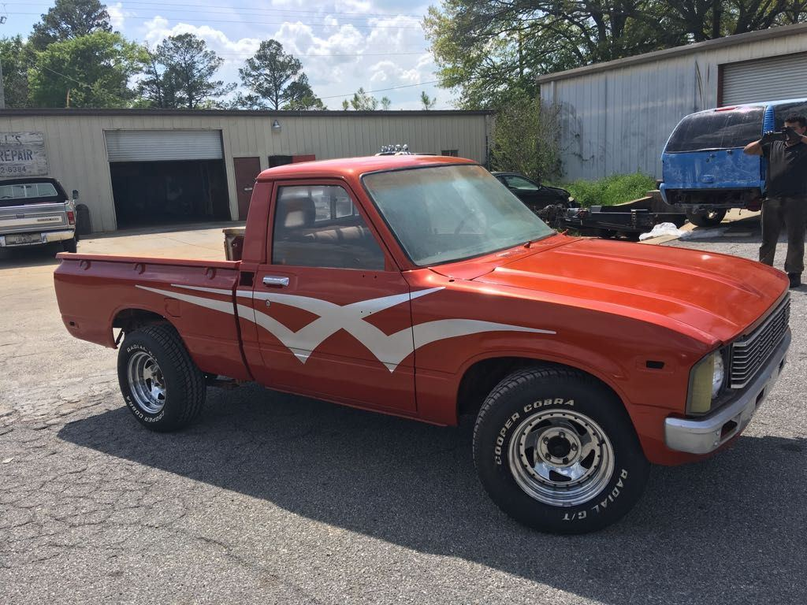

Family-run. Fair prices. Fixed right.
4.5★ · 46 Google reviews
Auto repair and body shop on Hammond St in Carrollton, GA. Joel and the team keep you in the loop from drop-off to keys.
Call (770) 634-7737What we fix
In the bay
01Engine workFrom diagnostics to full engine replacement.
02Brakes & steeringBrake jobs, steering columns and gear boxes.
03A/C repairGetting the cold air back before Georgia summer.
04Body shopCollision and body repairs under the same roof.
05Vacuum pumps & partsDomestic and import parts, replaced right.
06Same-day when possibleCustomers say they keep you informed as they go.
Straight from drivers
Very friendly family owned business. Joel and Jack took care of all the problems related to my car. They keep you informed about the progress and will work with you.
They did amazing work, and helped us to get home as fast as possible since we were stuck out of our home state. Very understanding, affordable, and went the extra mile when they didn't have to. 10,000/10
If there was 5 more stars I would give them 10 stars. They went above and beyond to fix my AC problem. Greatly appreciated!! Thank u so much Joel and everyone else involved!! Very nice people!